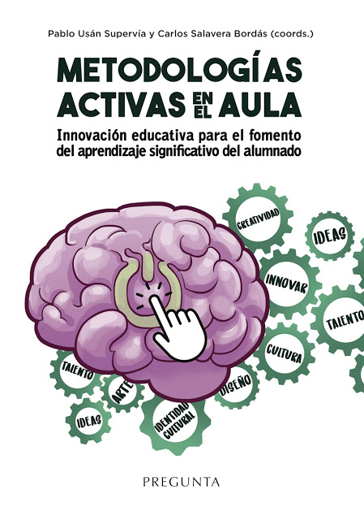

Artículo destacado de la semana
Esta semana exploramos el impacto de la inteligencia artificial en la educación. Desde el uso de asistentes virtuales hasta la personalización del aprendizaje, la IA está revolucionando las aulas.
Leer másUsa Metodologías Activas
Conoce cómo los docentes están aplicando metodologías activas para evaluar de forma más precisa las competencias de sus estudiantes en tiempo real.
Leer másIncorpora la gamificacion
La gamificación está ganando terreno como estrategia motivacional en las aulas modernas. Te explicamos cómo implementarla de forma efectiva.
Leer más